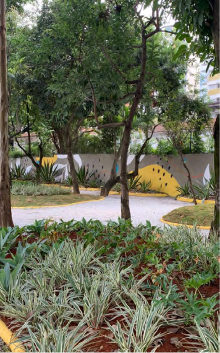
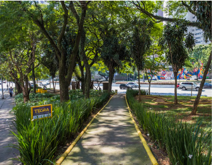

Gentilezas Urbanas
Galeria Gentilezas Urbanas
- 
- 
Programa de Gentilezas Urbanas
Revitalização e Gestão de espaços públicos como praças, passarelas, escadarias, rotatórias e parques públicos.
+ de 30 espaços públicos adotados e revitalizados;
+ de 2,7 milhões investidos no pragrama de Gentilezas Urbanas
As Gentilezas Urbanas da TEGRA fazem parte do programa de Relacionamento com Vizinhança, que visa estabelecer comunicação com stakeholders do entorno de suas obras e stands, para que possa avaliar os impactos e possíveis melhorias nessas regiões.